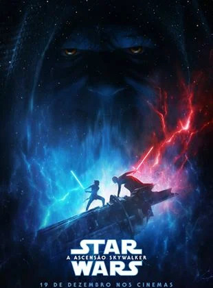

Direção:
J.J. AbramsElenco:
Daisy Ridley, Adam Driver, Oscar IsaacGênero:
AçãoClassificação:
12 anosSinopse:
Em Star Wars: Episódio IX, com o retorno do Imperador Palpatine (Ian McDiarmid), todos voltam a temer seu poder. Assim, a Resistência toma a frente da batalha que ditará os rumos da galáxia. Treinando para ser uma completa Jedi, Rey (Daisy Ridley) ainda se encontra em conflito com seu passado e futuro, mas teme pelas respostas que pode conseguir a partir de sua complexa ligação com Kylo Ren (Adam Driver), que também se encontra em conflito pela Força. ASSISTA AO FILME.